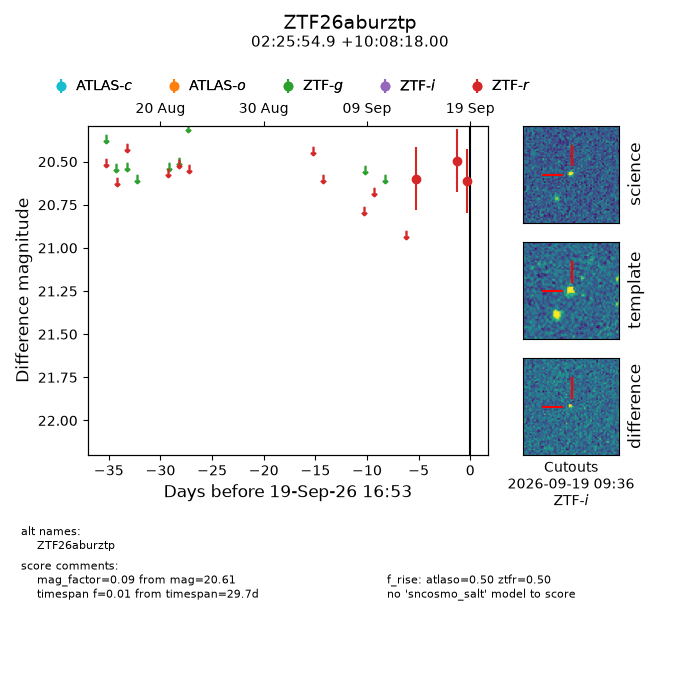
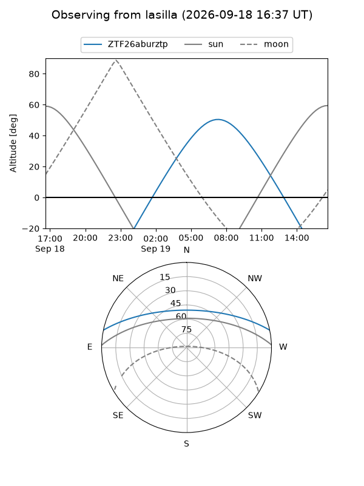
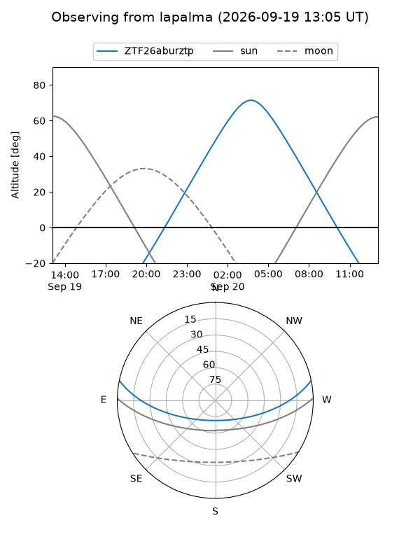
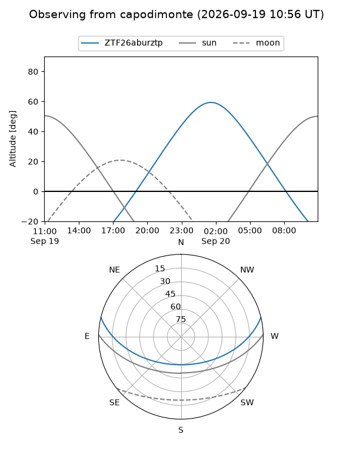

ZTF26aburztp
Target ZTF26aburztp at 2026-09-19 16:55
Aliases and brokers:
FINK-ZTF: ztf.fink-portal.org/ZTF26aburztp
Lasair-ZTF: lasair-ztf.lsst.ac.uk/objects/ZTF26aburztp
ALeRCE-ZTF: alerce.online/object/ZTF26aburztp
Direct TNS query: direct search
alt names
ZTF26aburztp (ztf,fink_ztf)
Coordinates:
equatorial (ra, dec) = 36.4785,+10.13833
equatorial (HMS+DMS) = 02:25:54.85,+10:08:18.00
galactic (l, b) = (157.7102,-46.25597)
Flags:
peak dt: +5.3
Photometry:
last atlaso=nan, ztfr=20.61
1 atlaso, 3 ztfr detections
Lightcurve

Visibility



Additional plots